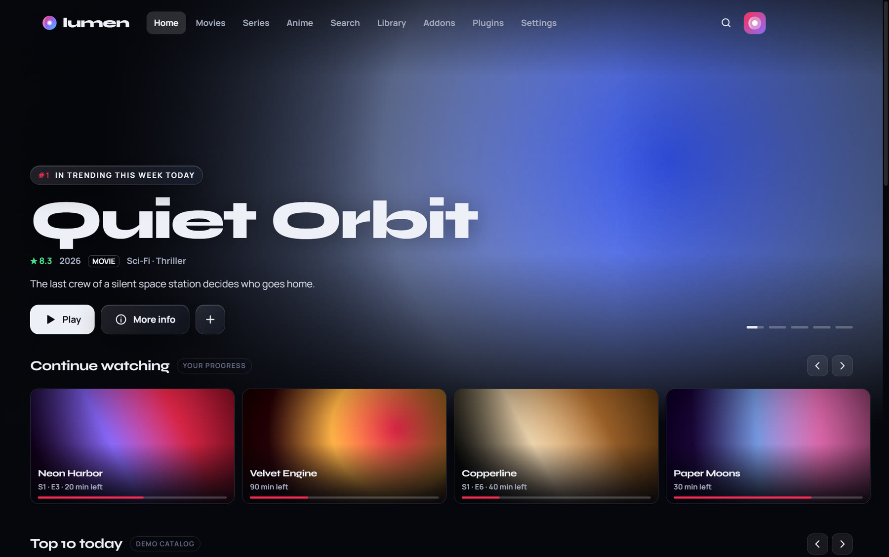
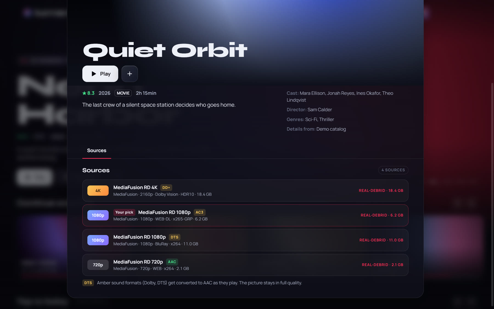
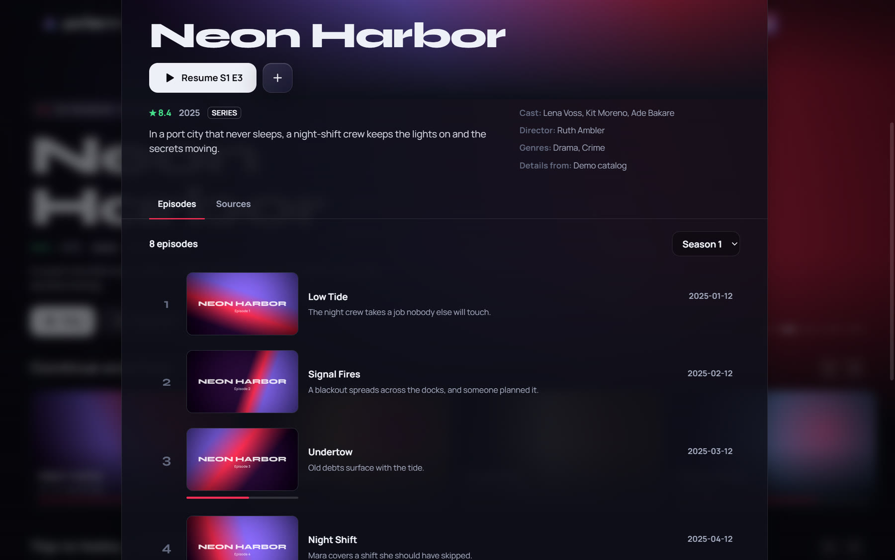
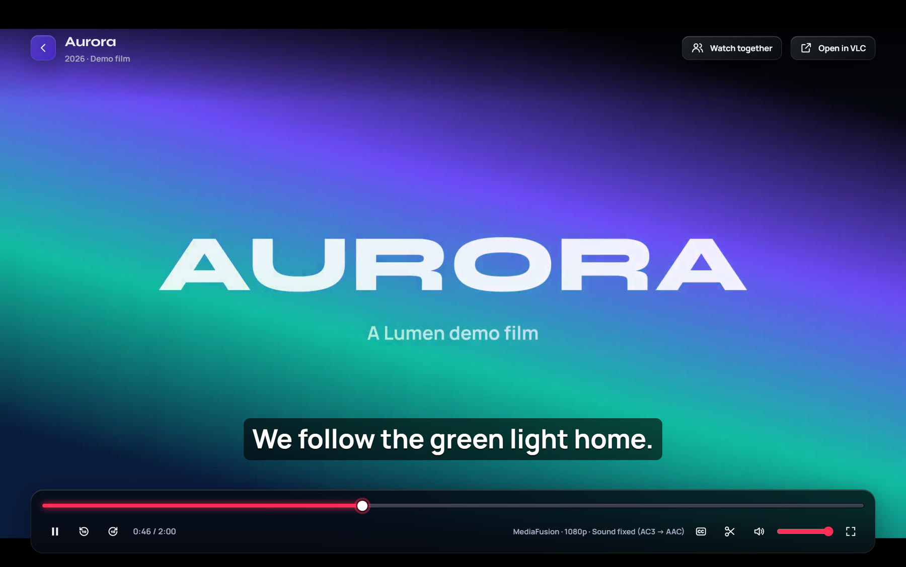
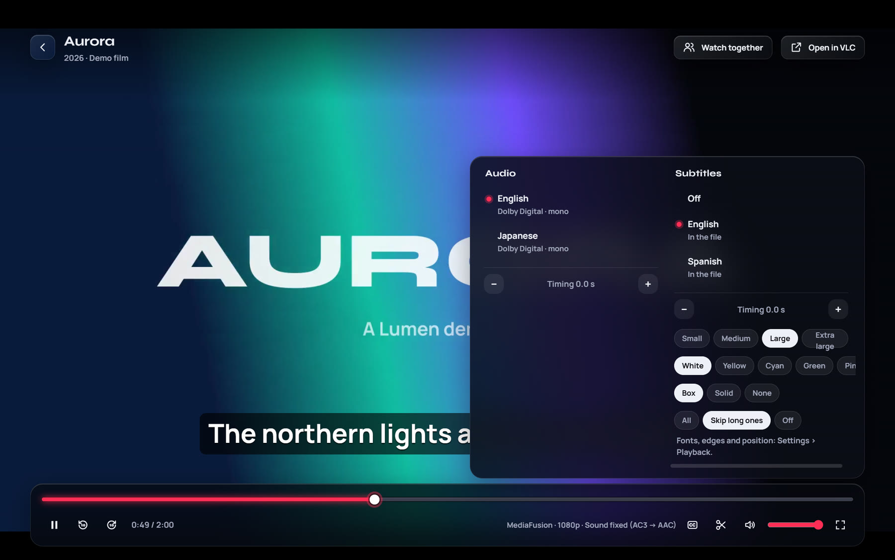
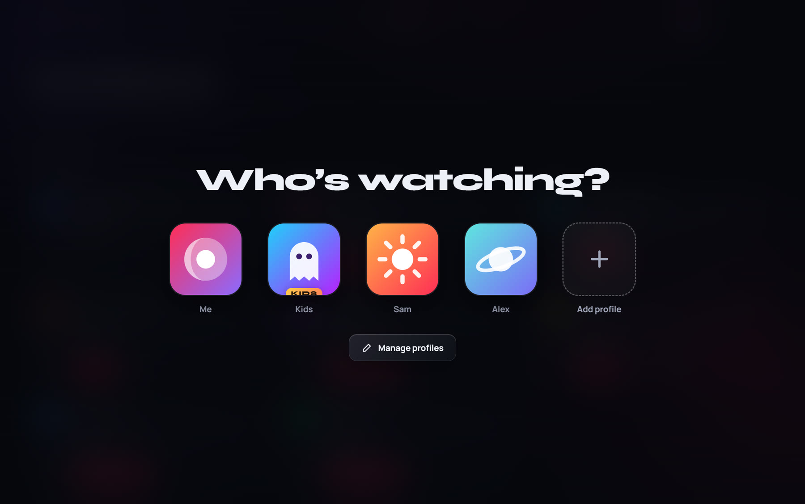
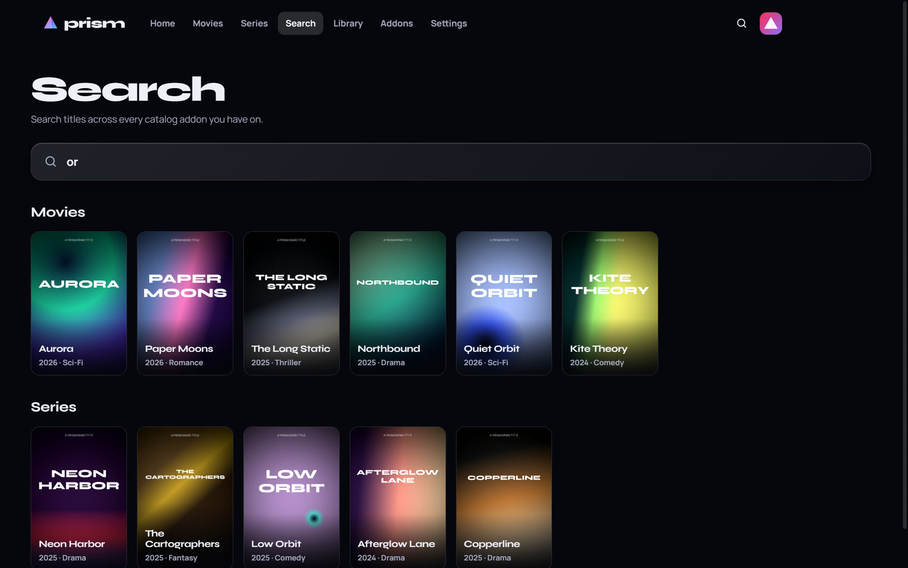
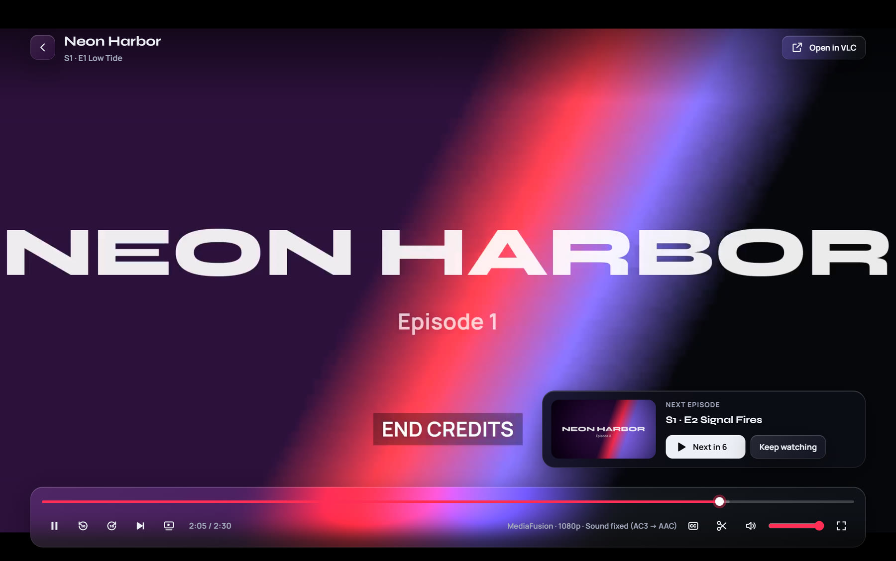
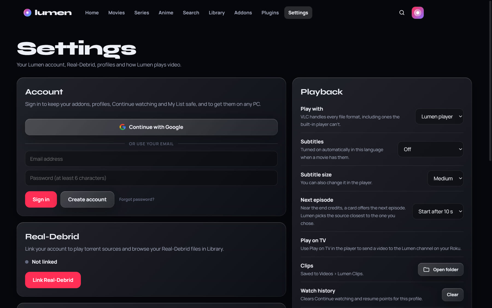

Your addons & Real-Debrid
Works with Stremio addons. Popular ones add in one click from inside the app, and your own Real-Debrid key stays yours.
Your addons, on one glass screen.
Bring the Stremio addons you already use and your Real-Debrid account. Lumen turns them into a home screen you'll actually enjoy: movies, series and anime, a proper player, profiles for the whole family and watching together with friends.

Lumen does the work of a streaming app with the addons and accounts you choose. It doesn't come with any content of its own.
Works with Stremio addons. Popular ones add in one click from inside the app, and your own Real-Debrid key stays yours.
A dedicated Anime tab, a weekly airing calendar in your time zone, and your MyAnimeList or AniList list, with the season and episode you're on.
Share a 6-letter code and watch in sync with friends who have Lumen. Play, pause and jumps are shared, and everyone streams from their own sources.
Fixes Dolby and DTS sound and pictures your PC can't show, picks audio languages, styles subtitles, skips intros and lines up the next episode.
Everyone gets their own Continue watching, My List and look. Kids profiles only show titles rated for their age, behind a parent PIN.
Six themes, glowing Top 10, frosted glass, soft sounds and five languages. A Light mode keeps older laptops smooth.
Send what you're watching to the Lumen channel on a Roku TV, right from the player.
New versions download in the background and install in one click. Sign in to keep your profiles and lists on every PC.
Every screen is built on the same frosted glass, tinted by whatever you're watching.








Run the installer. Windows may say "Windows protected your PC" because Lumen isn't code-signed yet: choose More info, then Run anyway.
Open Addons › Get addons and add the ones you like, or paste the links of addons you already use.
Optional: link your account in Settings for cached torrent sources, then press play.
Yes. Lumen is free and has no ads. Real-Debrid and some addons are separate services with their own prices.
No. Lumen only plays what the addons you add can find. You choose the addons and you're responsible for how you use them.
Lumen isn't signed with a paid code-signing certificate yet, so Windows SmartScreen and some antivirus programs don't recognise it at first. Choose More info › Run anyway. The installers are published on GitHub with every release.
The Download button picks for you. Most PCs need Lumen-Setup-x.y.z.exe; laptops with a Snapdragon (ARM) chip need the -arm64 one. There's also a portable version that runs without installing (it doesn't update itself).
Lumen is for Windows 10 and 11 (x64 and ARM64), with a companion channel for Roku TVs.
Lumen checks for new versions by itself and downloads them in the background. When one is ready, Settings shows a Restart to update button.
Download Lumen, add your addons and make it yours.